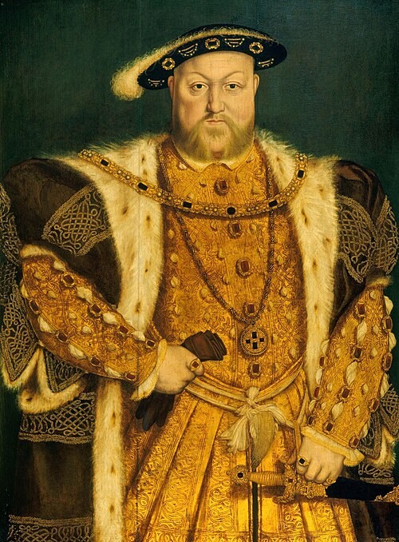
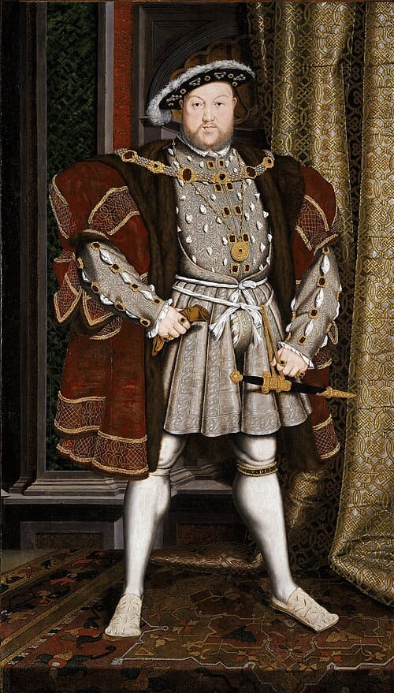
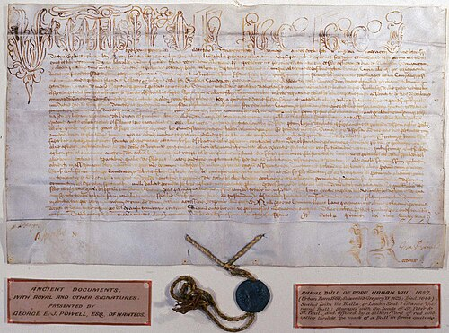
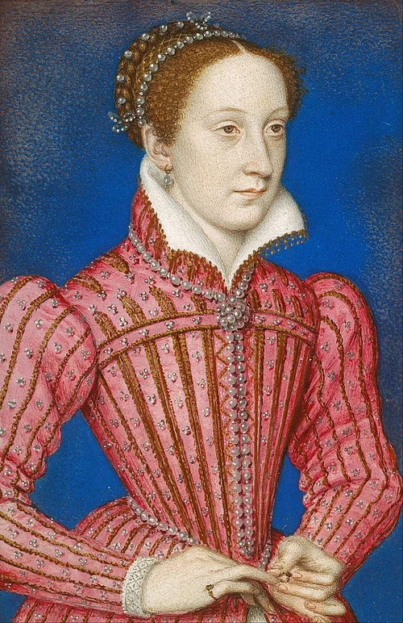

Key Topic 1: Queen, government and religion, 1558-69
Paper 2: Early Elizabethan England, 1558-88
Course Textbook
Enquiry: From religious division to the Armada: How did Elizabeth secure her throne?
Contents
|
Lesson 1: KT1.1: The situation on Elizabeth’s accession, 1558
|
|
|
Lesson 2: KT1.2: The 'settlement' of religion, 1559
|
|
|
Lesson 3: KT1.3: Challenge to the religious settlement
|
|
|
Lesson 4: KT1.4: The problem of Mary, Queen of Scots
|
|
L1: KT1.1: The situation on Elizabeth’s accession, 1558[[SRC_MARKER:L0_Start]]
Learning Objectives
Understand the rigid structure of Elizabethan society, the concept of the Great Chain of Being, and the mechanics of Tudor government, including the roles of the Court, Privy Council, and Parliament.
Analyse the intense challenges Elizabeth faced regarding her legitimacy, sixteenth-century gender prejudices against a 'Queen Regnant', and the political dilemma of marriage.
Evaluate the interconnected domestic and foreign threats facing England in 1558, specifically severe financial weaknesses, the loss of Calais, and the dangerous 'Auld Alliance' between France and Scotland.
Do Now Activity
What did William Harvey discover?
In what year did the Black Death arrive in England?
What did Edward Jenner discover?
Who published the Germ Theory in 1861?
What was 'miasma'?
Who was Elizabeth I's father?
What was the Reformation?
Who was the monarch immediately before Elizabeth?
What religion was Mary I?
What was the 'Great Chain of Being'?
Vocabulary Check
Fill in the blanks using the vocabulary words below.
Great Chain of Being | Patronage | Privy Council | Queen Regnant | Legitimacy | Debasement | Auld Alliance
When Elizabeth ascended the throne in 1558, Tudor society was strictly organized according to the , a hierarchical structure where everyone had a fixed place. To maintain control and reward loyalty, the Queen relied heavily on the system of , distributing land and titles to powerful nobles. She was advised by a small, elite group of trusted ministers called the . However, as an unmarried , she faced immense challenges, including Catholic doubts about her , economic ruin caused by the of the coinage, and the constant foreign threat of the between France and Scotland.
[[SRC_MARKER:L0_Source_0]]
Source S1: The Religious Divide

Map showing the religious divisions in Europe around 1558.
When Elizabeth Tudor ascended to the throne in November 1558, she was just 21 years old and lacked experience. She inherited a violent kingdom with no permanent army or national police force. Society was organised in a rigid hierarchy known as the "Great Chain of Being", where inequality was accepted and everyone "knew their place". Approximately 90% of the population lived in the countryside, while 10% lived in towns. In rural areas, the nobility (just 1% of the population) sat at the top, followed by the gentry, yeomen, tenant farmers, and landless labourers. In towns, wealthy merchants dominated, followed by professionals, craftsmen, and unskilled labourers.
Government was inextricably linked to the monarch, who ruled by "Divine Right" and maintained control through patronage—rewarding loyalty with land, titles, and monopolies. The Royal Court, made up of nobles, existed to entertain the Queen and display her wealth. Day-to-day administration fell to the Privy Council, a group of roughly 19 trusted nobles and advisers who met several times a week. The most crucial figure here was William Cecil, Elizabeth's Secretary of State. Parliament was less powerful than today and was called only occasionally (just nine times during her entire reign); Elizabeth primarily needed it to grant extraordinary taxation and pass laws. Locally, Justices of the Peace (JPs) and Lord Lieutenants enforced law and order and raised the local militia.
Elizabeth faced immediate existential challenges to her authority. Legitimacy refers to a monarch's lawful right to rule. Elizabeth was the daughter of Henry VIII and Anne Boleyn. Because the Pope refused to recognise Henry's divorce from Catherine of Aragon, devout Catholics viewed Elizabeth as illegitimate. Furthermore, Henry VIII had temporarily excluded Elizabeth from the succession after executing her mother in 1536, providing her opponents with legal grounds to challenge her claim.
Compounding this was her gender. Sixteenth-century Christian traditions dictated that women should follow male authority, and women were largely viewed as second-class citizens without independent property rights. A "Queen Regnant"—a queen ruling in her own right with actual power—was viewed with deep suspicion, as people fundamentally believed a woman was incapable of leading a country or an army. Consequently, there was universal pressure for Elizabeth to marry and secure the Tudor dynasty. However, marriage posed a massive political risk: her husband would be expected to govern the country, stripping Elizabeth of her power. Despite these patriarchal prejudices, Elizabeth possessed distinct strengths; she was highly educated, confident, strong-willed, and a committed Protestant.
Elizabeth inherited a Crown in financial crisis, inheriting a massive debt of £300,000. This was a staggering sum given that her annual Crown revenues had fallen to just £286,667. To make matters worse, £100,000 of this debt was owed to the Antwerp Exchange (foreign moneylenders) who charged a crippling interest rate of 14%.
This financial black hole was caused by costly wars fought by her predecessors. Mary I had sold off vast amounts of Crown lands to fund these conflicts, severely reducing Elizabeth's rental income and increasing her reliance on Parliament for taxation. Furthermore, since the 1540s, the government had debased the coinage (reducing the silver content to mint more money), which caused widespread inflation. Raising taxes to solve this was risky as it could alienate the landowning classes. Instead, Elizabeth hoarded her income, cut her household expenses by half, and sold some Crown lands (raising £120,000), remarkably claiming the Crown was out of debt by 1574.
England was isolated and surrounded by Catholic superpowers. Elizabeth inherited a war with France from Mary I, which ended in the Treaty of Cateau-Cambrésis in 1559, formally surrendering Calais. France remained a dangerous enemy with a larger population and greater wealth.
Crucially, France was allied with England's northern neighbour, Scotland, through the "Auld Alliance". Scotland was ruled by Mary of Guise on behalf of her daughter, Mary, Queen of Scots. French troops were stationed in Scotland, placing a hostile force directly on England's border and creating the threat of a joint invasion. To defuse the immediate French threat, Elizabeth eventually signed the Peace of Troyes in 1564, definitively recognising the French claim to Calais to avoid further war.
Ultimately, the crisis of 1558 was so severe because Elizabeth’s problems did not exist in isolation; they actively magnified each other. Her gender and contested legitimacy directly emboldened foreign enemies like France, who championed Mary, Queen of Scots’ rival claim to the throne. Simultaneously, the Crown’s crippling £300,000 debt meant Elizabeth lacked the financial muscle to raise an army to defend against the Auld Alliance on her northern border. She was a vulnerable target with no money to buy a shield. Consequently, Elizabeth was forced to rely on extreme political caution, the strategic advice of her Privy Council, and careful public relations just to survive her first few years in power.
Pair & Share Activity
Q1. Discuss with your partner: What was Elizabeth's most urgent problem in 1558?
L2: KT1.2: The 'settlement' of religion, 1559[[SRC_MARKER:L1_Start]]
Learning Objectives
Understand the key features and impact of Elizabeth's religious settlement (1559), including the Act of Supremacy and the Act of Uniformity.
Analyse the crucial role of the Church of England in society, specifically its function in enforcing social control, managing Church courts, and conducting visitations.
Evaluate the nature and extent of the Puritan and Catholic challenges to the religious settlement, including the role of the nobility, the Papacy, and foreign powers.
Do Now Activity
What year did Elizabeth I become Queen?
How much debt did Mary I leave to Elizabeth?
Which French city did England lose in 1559 under the Treaty of Cateau-Cambrésis?
What was a 'Queen Regnant'?
Who was Elizabeth's mother?
Why was Elizabeth's legitimacy questioned by Catholics?
What was the 'Auld Alliance'?
What did Florence Nightingale improve?
Who discovered Penicillin by accident?
What is a 'magic bullet'?
Vocabulary Check
Write a historically accurate sentence connecting two terms from the glossary box below.
Puritan | Recusant | Royal Injunctions | Visitations
Your Sentence:
[[SRC_MARKER:L1_Source_0]]
Source S1: The Act of Supremacy

A portrait of Elizabeth as Supreme Governor of the Church of England.
Upon taking the throne, Elizabeth faced a deeply fractured nation teetering on the edge of a religious civil war. To prevent the bloodshed seen in France and Germany, Elizabeth passed the Religious Settlement in 1559. It was explicitly designed to seek a 'Middle Way'—a political compromise meant to satisfy moderate Protestants and Catholics alike. The Settlement was built on three legal pillars. First, the Act of Supremacy made Elizabeth the 'Supreme Governor' of the Church rather than 'Supreme Head', a subtle wording change that appeased Catholics who believed only the Pope could be the head of the Church. Second, the Act of Uniformity dictated that the Book of Common Prayer must be used in all churches, and services were to be in English. However, to appease Catholics, priests were allowed to wear ornate vestments, and the wording around the communion bread and wine was left deliberately ambiguous regarding transubstantiation. Third, the Royal Injunctions mandated that all clergy teach the Royal Supremacy, report recusants to the Privy Council, and possess an English Bible.
The Church of England was not just a place of worship; it was the most important mechanism for social control in the country. The parish church played a central role in all aspects of people’s lives, providing religious services and guidance for communities in times of hardship and uncertainty. The Church of England promoted loyalty to the Queen by repeating prayers of obedience and thanks for her reign in their services. Furthermore, the Church ran its own legal system known as Church courts. These courts dealt with moral crimes, but crucially, they also handled all legal matters relating to marriage, sexual offences, slander, wills, and inheritance. To ensure total obedience, Elizabeth instituted visitations—inspections every three to four years by bishops who would examine the clergy, check their licenses, and ensure the religious settlement was being rigorously enforced. Churches also organised festivals for their parishioners, such as May Day and Easter celebrations, cementing their place at the heart of community life.
Puritans were radical, hard-line Protestants who viewed Elizabeth's 'Middle Way' as a deeply offensive compromise with "Catholic superstitions". Returning from exile under Mary I, they wanted to eradicate bishops, altars, music, and special priestly clothing. Their challenge primarily manifested in two key flashpoints. First, the Puritan campaign against crucifixes: Puritans demanded the removal of crucifixes from churches, viewing them as idols. Elizabeth initially stood firm, but when several powerful Puritan bishops threatened to resign, she backed down. Second, the Vestment Controversy: in 1566, the Archbishop of Canterbury issued the 'Book of Advertisements' to enforce the wearing of the traditional Catholic-style robes. When 37 Puritan priests in London refused to comply, they were swiftly dismissed from their posts. Ultimately, while Puritans within Parliament and the clergy were highly vocal, their threat was contained.
Initially, Elizabeth treated English Catholics with strategic leniency. While up to one-third of the nobility became recusants, Elizabeth instructed authorities to turn a blind eye to minor infractions to avoid creating Catholic martyrs. However, this domestic problem was radically escalated by the Papacy and foreign intervention. In 1566, the Pope actively ordered English Catholics not to attend the new Church of England services. This danger became existential in 1570 when the Pope formally excommunicated Elizabeth from the Catholic Church. This weaponised domestic recusants and officially encouraged Catholic superpowers to sponsor plots to assassinate Elizabeth. The arrival of Mary, Queen of Scots in England in 1568 provided disgruntled Catholics with a living, legitimate figurehead to rally around, irreversibly transforming religious dissent into outright treason.
Elizabeth’s Religious Settlement was a brilliant piece of initial statecraft; by creating a broad, ambiguous 'Middle Way', she successfully avoided an immediate civil war in 1559. She used the Church not just for prayer, but as a vast, nationwide network of social control, utilising Church courts and parish priests to enforce loyalty. However, theology is notoriously difficult to compromise on. The Puritans remained a persistent, irritating thorn in her side regarding the day-to-day running of the Church. Conversely, the Catholic threat morphed from quiet disobedience into outright treason. Once the Pope excommunicated Elizabeth and Mary, Queen of Scots crossed the border, religion became inextricably linked to national security and foreign invasion.
Pair & Share Activity
Q1. Discuss with your partner: Did the 1559 Religious Settlement actually solve the religious crisis?
L3: KT1.3: Challenge to the religious settlement[[SRC_MARKER:L2_Start]]
Learning Objectives
Understand the nature and extent of the Puritan challenge, focusing on their theological objections, the Crucifix Controversy, and the Vestment Controversy.
Evaluate the Catholic challenge at home, including recusancy and the rising threat of the northern nobility.
Analyse the existential threat from abroad, encompassing the Counter-Reformation, the 1570 Papal Bull of excommunication, and the looming shadow of foreign superpowers.
Do Now Activity
What two Acts made up Elizabeth's Religious Settlement of 1559?
What title did Elizabeth take in the Act of Supremacy?
What was the Act of Uniformity?
What was the Book of Common Prayer?
Who were the Puritans?
What were the Royal Injunctions?
How much debt did Mary I leave to Elizabeth?
Which French city did England lose in 1559?
What year did the Black Death arrive in England?
Who published the Germ Theory in 1861?
Vocabulary Check
Write a clear definition and a historically accurate sentence for the term: Counter-Reformation
[[SRC_MARKER:L2_Source_0]]
Source S1: Papal Bull

Regnans in Excelsis, the 1570 Papal Bull excommunicating Elizabeth I.
Puritans were radical, hard-line Protestants who believed the 1559 Religious Settlement had not gone nearly far enough. Having fled to Protestant Europe during the reign of Mary I, they returned to England wanting a purely biblical, unornamented church. They completely opposed the existence of bishops, believing churches should be run by committees of elected elders, and despised "Catholic" elements like altars, organ music, and special clerical clothing.
Their challenge primarily manifested in two key flashpoints. First, the Crucifix Controversy: Puritans demanded the complete removal of crucifixes from churches, viewing them as superstitious idols. Elizabeth, however, liked them and wanted churches to retain a familiar look and feel to appease her Catholic subjects. When several powerful Puritan bishops threatened to resign over the issue, Elizabeth backed down—she could not afford to lose her most educated Protestant clergy, though she stubbornly kept a crucifix in her own private royal chapel.
Second, the Vestment Controversy: By 1565, it was clear that many Puritan priests were openly refusing to wear the required surplice (clerical robes). In response, the Archbishop of Canterbury issued the 'Book of Advertisements' in 1566, setting out strict guidelines for priestly dress. He held a special exhibition in London to demonstrate exactly what must be worn; 37 Puritan priests refused to conform and were swiftly dismissed from their posts.
Ultimately, while Puritans within Parliament and the clergy (led by figures like John Foxe and Thomas Cartwright) were highly vocal, their actual threat was contained. They would never attempt to violently overthrow Elizabeth or ally with foreign powers, because the alternative—a Catholic monarch—was completely unthinkable to them.
The Catholic Church, led by the Pope, became increasingly hostile to Protestantism and Elizabeth's rule. Domestically, the Catholic threat was quietly festering. Many English people, particularly the nobility and gentry in the north and north-west of England, remained staunchly loyal to traditional Catholic beliefs and the Papacy.
A significant number of these individuals became recusants—Catholics who actively refused to attend the new Protestant Church of England services, choosing instead to practise their religion in secret. Initially, Elizabeth tolerated them and ordered authorities not to enforce recusancy fines (which were one shilling a week) too strictly. Her strategy was deliberate: she did not want to create religious martyrs or provoke a full-scale Catholic rebellion by backing them into a corner.
However, this lenient stability did not last. In 1569, the Earls of Northumberland and Westmorland led a major military uprising known as the Revolt of the Northern Earls. Their goal was to depose Elizabeth, restore Catholicism, and install Mary, Queen of Scots, on the throne. They even went as far as storming Durham Cathedral to celebrate a traditional full Catholic mass. Though the rebellion was ultimately crushed, it proved that the domestic Catholic threat was highly dangerous.
The domestic unrest was heavily amplified by international pressures. Across Europe, the Counter-Reformation was in full swing—an aggressive campaign by the Catholic Church to root out heresy and reverse the Protestant Reformation. As part of this, a Catholic seminary was established at Douai in the Netherlands to specifically train English Catholic priests, who were then smuggled back into England to keep the old faith alive.
The turning point occurred in 1570 when Pope Pius V issued a Papal Bull excommunicating Elizabeth. This momentous decree officially threw Elizabeth out of the Catholic Church, declared her a 'false queen', and explicitly instructed English Catholics that it was no longer a sin to rebel against her—in fact, it absolved them of any loyalty to the Crown.
This excommunication was disastrous for Elizabeth because it effectively weaponised English Catholics into potential traitors and provided religious justification for foreign superpowers, specifically Spain and France, to actively sponsor plots and invasions to overthrow her. The arrival of the Catholic Mary, Queen of Scots, in England in 1568 had already provided these foreign powers with a legitimate, ready-made replacement for the English throne, turning religious dissent into a severe geopolitical crisis.
While Elizabeth’s Religious Settlement of 1559 successfully established a state church and prevented immediate civil war, it fundamentally failed to create a united nation. The settlement inadvertently forced Elizabeth to fight a two-front religious battle. From within her own ranks, Puritans fiercely challenged her authority over church doctrine and dress (such as the Crucifix and Vestment controversies), highlighting deep Protestant divisions. Yet, the Puritan threat remained relatively benign because they would never conspire against a Protestant queen. Conversely, the Catholic challenge rapidly mutated from passive domestic recusancy into an existential geopolitical crisis. The combination of the 1569 Northern Earls' rebellion, the 1570 Papal excommunication, and the arrival of Mary, Queen of Scots, fused local religious discontent with the vast military might of foreign Catholic superpowers like Spain and France. This transformed the Catholic challenge from a matter of private faith into a direct, treasonous threat to Elizabeth's crown and life.
Pair & Share Activity
Q1. Discuss with your partner: Were the Puritans a serious threat to Elizabeth's rule?
L4: KT1.4: The problem of Mary, Queen of Scots[[SRC_MARKER:L3_Start]]
Learning Objectives
Understand the strength of Mary, Queen of Scots' claim to the English throne and why English Catholics viewed her as the legitimate monarch.
Explain the dramatic events in Scotland that forced Mary to abdicate and flee across the border into England in 1568.
Analyse the profound dilemma Mary’s arrival created for Elizabeth, including the investigation into the 'Casket Letters' and the strategic decision to keep her in captivity.
Do Now Activity
What was the 'Crucifix Controversy'?
What was the 'Vestment Controversy'?
Who was the Pope that excommunicated Elizabeth in 1570?
What was the Papal Bull of 1570?
Why did the Dutch Revolt matter to Elizabeth?
What title did Elizabeth take in the Act of Supremacy?
What was the Book of Common Prayer?
Who were the Puritans?
What was a 'Queen Regnant'?
What did Edward Jenner discover?
Vocabulary Check
Fill in the blanks using the vocabulary words below.
Abdicate | Casket Letters | Divine Right of Kings | Conference of York
Following a scandalous marriage to the man suspected of murdering her husband, Scottish nobles rebelled against Mary, forcing her to her throne in favor of her infant son. When Mary fled to England seeking Elizabeth's help, she carried the unshakeable belief that she was chosen by God under the . However, Elizabeth refused to restore her to power, instead organizing the to investigate Mary's alleged crimes. The primary evidence presented against Mary were the highly controversial , a collection of poems and documents that supposedly proved her involvement in the murder.
[[SRC_MARKER:L3_Source_0]]
Source S1: Mary Queen of Scots

A portrait of Mary, Queen of Scots, a Catholic claimant to the English throne.
To understand the threat Mary posed, one must look at her royal bloodline. Mary, Queen of Scots (Mary Stuart) was Elizabeth’s second cousin. She was the great-granddaughter of King Henry VII of England. Because Elizabeth had no children and had not named an heir, Mary was the direct and obvious next-in-line to the English throne.
However, to many English Catholics, Mary was not just the heir; she was the rightful Queen of England already. Devout Catholics had never accepted Henry VIII’s divorce from his first wife, Catherine of Aragon. Therefore, they believed his second marriage to Anne Boleyn (Elizabeth’s mother) was completely invalid. In their eyes, Elizabeth was illegitimate and had no legal right to wear the crown. Mary, on the other hand, was born in wedlock, possessed a flawless royal pedigree, and most importantly, was a staunch Catholic. Furthermore, she had powerful international connections, having briefly been the Queen of France through her marriage to King Francis II.
Despite her strong position, Mary’s reign in Scotland ended in absolute disaster. Following the death of her first husband, the King of France, Mary returned to rule a Scotland that was becoming increasingly Protestant. In 1565, she married the powerful Scottish nobleman, Lord Darnley. The marriage was deeply unhappy, and in 1567, Darnley was assassinated in a mysterious explosion—though he was actually found strangled in the garden.
The prime suspect was the Earl of Bothwell. Shockingly, just a few months later, Mary married Bothwell. This disastrous decision triggered a massive uprising among the Scottish nobility. The Protestant Scottish lords rebelled, defeated Mary's forces, and imprisoned her in Lochleven Castle. They forced her to abdicate (give up the throne) in favour of her one-year-old son, who became King James VI of Scotland.
In May 1568, Mary managed a daring escape from her island prison. She raised a small army but was quickly defeated at the Battle of Langside. Desperate and out of options, she fled south, crossing the border into northern England in a fishing boat, expecting her cousin Elizabeth to help her regain her Scottish throne.
Mary’s sudden arrival in England in 1568 was a political nightmare for Elizabeth. She was faced with an unsolvable dilemma containing four equally dangerous options:
- Help Mary regain her throne: This would enrage the Protestant Scottish lords who had overthrown her, destroying England's secure northern border.
- Hand Mary back to the Scottish lords: Elizabeth believed strongly in the "Divine Right of Kings" (that monarchs were chosen by God). Aiding subjects in punishing an anointed queen set a terrifying precedent for her own rule.
- Allow Mary to travel abroad: If Mary went to France or Spain, she could easily raise a foreign Catholic army to invade England and seize Elizabeth's throne.
- Keep Mary in England: This would make Mary a living, breathing focal point for every disgruntled English Catholic and treasonous plotter.
To buy time, Elizabeth decided to hold a legal inquiry, known as the
Conference of York (which later moved to Westminster), to determine if Mary was guilty of Darnley's murder. The Scottish lords brought forward the
'Casket Letters'—a collection of letters and poems allegedly written by Mary to Bothwell, plotting Darnley's death. Mary fiercely insisted they were forgeries and refused to stand trial, arguing that as an anointed queen, no court had the authority to judge her.
Elizabeth engineered a masterful, if cynical, political fudge. She declared that the letters did not prove Mary's guilt, but they also did not prove her innocence. This "not proven" verdict allowed Elizabeth to justify keeping Mary imprisoned in England indefinitely, while also allowing the Protestant Scottish lords to retain power in Scotland.
Mary, Queen of Scots, was the most significant domestic and dynastic problem Elizabeth faced in her early reign. With her impeccable Tudor bloodline and strict adherence to the Catholic faith, Mary represented everything Elizabeth was not—a legitimate, Catholic alternative for the English throne. When Mary’s scandalous personal life and the murder of Lord Darnley resulted in her forced abdication and flight to England in 1568, she inadvertently transferred Scotland’s instability directly onto English soil. Elizabeth’s decision to hold Mary in comfortable but heavily guarded captivity following the inconclusive 'Casket Letters' inquiry was a necessary short-term compromise. However, it had severe long-term consequences. By keeping her Catholic rival locked up in England, Elizabeth inadvertently provided a figurehead for the very rebellions and plots she was trying to avoid, starting immediately with the Revolt of the Northern Earls in 1569.
Pair & Share Activity
Q1. Discuss with your partner: Why was Mary, Queen of Scots, such a unique problem for Elizabeth?
Generated: 2026-08-30 18:39:12 UTC | Unit: eee